AI Academy · Level 1 · Grade 6 · Week 19 · Student lesson
Similarity
Learn to understand, design, build, test and explain AI systems responsibly.
Project: Helpful Classroom Sorter
Before you start
Week 8: a useful feature depends on the task.
Plan time to read, investigate and explain. Keep predictions separate from observations.
Student lesson · 1 of 16
Your mission
Your learning target
I can calculate similarity using explicitly selected features and a stated scoring rule.
I can explain how a change in feature weights can change the highest scoring item.
I can handle ties and missing features without claiming that a similarity score proves suitability.
Remember before reading
Close your notes first. A rough first answer helps us choose the right starting point; it is not a score for your ability.
Without opening the old lesson, explain one key idea from Confidence Is Not Correctness. Give an example and a mistake that the idea helps you avoid.
Without opening the old lesson, explain one key idea from Boundaries and 'Not Sure'. Give an example and a mistake that the idea helps you avoid.
Without opening the old lesson, explain one key idea from Learning from Examples. Give an example and a mistake that the idea helps you avoid.
After trying, check the relevant lesson or ask your teacher. Change the part of your explanation that the evidence shows was wrong.
Recommendations often begin by comparing selected traits, not whole objects.
Learner name:
Readiness for the connected explanation
A system gives an item two matching-feature points. Does that mean a two-thirds chance that the item is suitable? What must you read first?
This week’s end goal
By the end, I can calculate similarity under a declared feature rule and explain a changed ranking.
Student lesson · 2 of 16
Notice the evidence
PICTURE STORY
Look Closely Before You Explain
Pictures give clues; evidence tells us what the clues mean.

What do you notice?
Name three visible details without explaining them yet.
Circle the detail most connected to the system's decision.
Name one detail that may be decoration or distraction.
Make a first prediction and state the clue that supports it.
My observations, prediction, and evidence:
A closer explanation
Two objects can be alike in colour and different in shape. A computer comparison needs a precise answer to similar in what way. Select features, state how their values are compared, and define what a larger score means. The result belongs to that rule; it is not a universal judgment about the objects.
Our target card is red, round and smooth. Three candidate cards are A: red, round, rough; B: blue, square, smooth; C: red, square, rough. First give one point for each feature that exactly matches the target and zero for each known mismatch. Add the points. Colour, shape and texture are the only selected features.
This paper exercise uses complete category values with agreed spelling. Real records can be missing or uncertain. Do not silently treat an unknown texture as a known mismatch or copy a value from the target. First identify whether the information supports the comparison.
Student lesson · 3 of 16
See how it works
VISUAL MECHANISM
Input → Process → Output
Follow the information instead of imagining magic inside the machine.
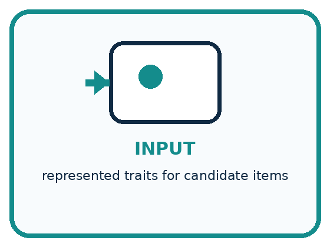
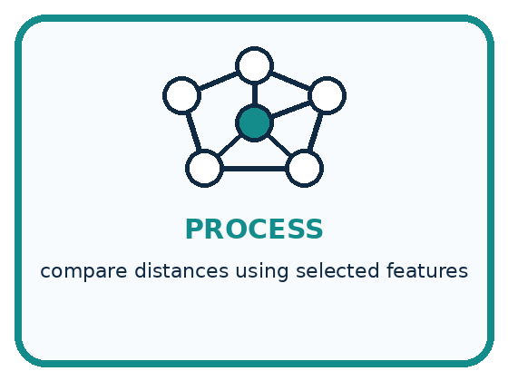
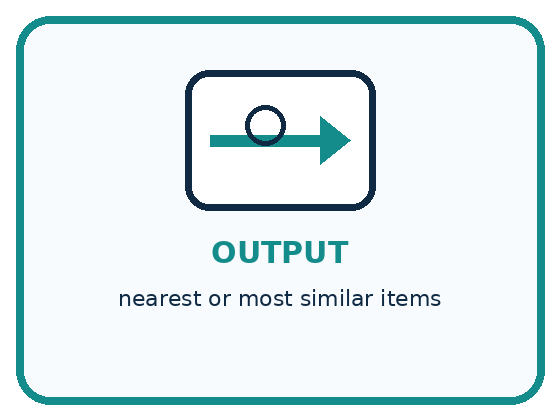
INPUT represented traits for candidate items
PROCESS compare distances using selected features
OUTPUT nearest or most similar items
Draw a fresh example with all three stages:
A closer explanation
Three features contribute to a score
A receives 1 for colour, 1 for shape and 0 for texture: total 2. B receives 0, 0 and 1: total 1. C receives 1, 0 and 0: total 1. Record the contributions, not just the totals, so another learner can check the computation.
A is most similar among these three candidates under this rule. That sentence names the candidate set and the rule. It does not say A is identical to the target, has the right texture or will be the best choice for a task that needs smooth material.
Connect the picture and the explanation
Point to the input, the deciding step and the result in this week’s visual. Explain the same step in ordinary words. A picture helps when you can say what each part represents.
Student lesson · 4 of 16
Compare the cases
PICTURE GALLERY
Four Cases, Four Clues
Use the visual cue, then read the evidence carefully.
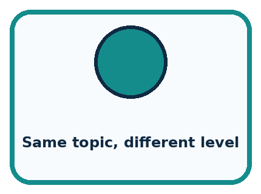
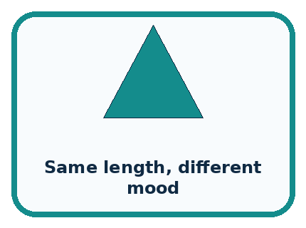
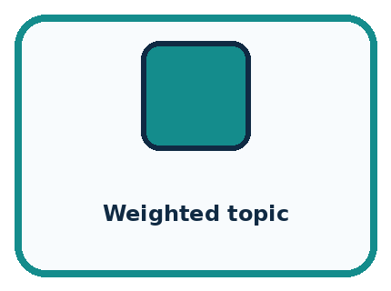
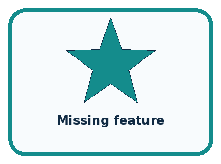
CASE 1 — Same topic, different level Clue: close on topic. Meaning: far on reading level.
CASE 2 — Same length, different mood Clue: close on length. Meaning: far on mood.
CASE 3 — Weighted topic Clue: topic counts more. Meaning: neighbor changes.
CASE 4 — Missing feature Clue: distance incomplete. Meaning: need policy.
Which two pictures are easiest to confuse? What evidence separates them?
Change one thing in the pictured case
Change: Keep original weights but change the target texture to rough.
Prediction: C scores 3; A and B each score 1.
Reason: C now matches all three target features; the others lose their smooth-texture match.
Student lesson · 5 of 16
Words that unlock the idea
VOCABULARY
Words You Can See and Use
The badge is a memory cue; the definition does the real thinking work.
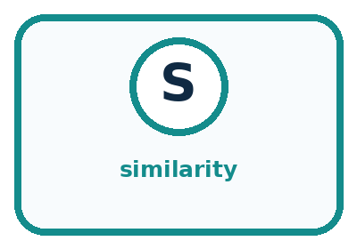
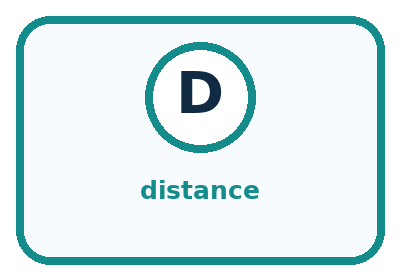
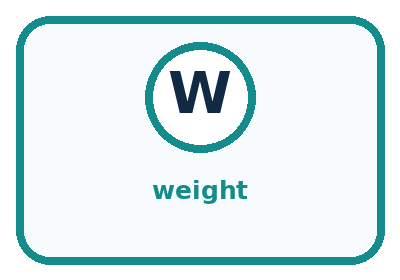
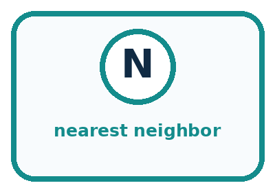
| Word | Meaning | My example |
|---|---|---|
| similarity | degree of likeness under chosen traits | |
| distance | numeric or ordered difference between representations | |
| weight | importance assigned to a feature | |
| nearest neighbor | item with smallest chosen distance |
Misconception detective
CLAIM TO REPAIR The nearest item is automatically the best recommendation.
Use one vocabulary word and one piece of evidence to repair it:
Words used in the closer explanation
| Word | Meaning |
|---|---|
| Feature match | Agreement between two recorded values for a selected feature |
| Tie | Two or more candidates sharing the same score |
| Candidate | An item being considered in a comparison |
Student lesson · 6 of 16
Follow a worked example
WORKED EXAMPLE
Watch the Reasoning, Not Just the Answer
Every step connects a claim to observable evidence.

STEP 1 — OBSERVE represented traits for candidate items
STEP 2 — TRACE compare distances using selected features
STEP 3 — CONCLUDE nearest or most similar items
What new evidence could change this answer?
A closer explanation
| Candidate | Colour and shape points | Texture worth 3 points | New total |
|---|---|---|---|
| A | 1 + 1 | 0 | 2 |
| B | 0 + 0 | 3 | 3 |
| C | 1 + 0 | 0 | 1 |
Suppose texture matters more for the stated comparison. Keep colour and shape worth one point each, but give three points for a texture match. B now scores 3 and becomes the unique highest scoring candidate. No card changed; the rule changed. Record both versions rather than overwriting the first result.
Weights express priorities in this designed rule. They need a reason connected to the task and should be set before inspecting the final evaluation results. A convenient winner does not justify a weight. If smooth texture is required without exception, use a requirement check rather than hoping a weighted score will always enforce it.
Learn from the worked case
Cover the result before checking it. Say what is given, choose the procedure, and follow one step at a time. Then uncover the result and explain your first mismatch. Ask why a step is allowed, not only what number it produces.
A pictorial worked case: Similarity
A fictional craft-card matcher compares each candidate with a target.
The facts we will use
Target: red, round, smooth. A: red,square,smooth. B: blue,round,smooth. C: red,round,rough.
Initially each exact feature match scores 1; return all highest scorers.
For the second comparison only, colour and shape matches score 1 each and a texture match scores 3.
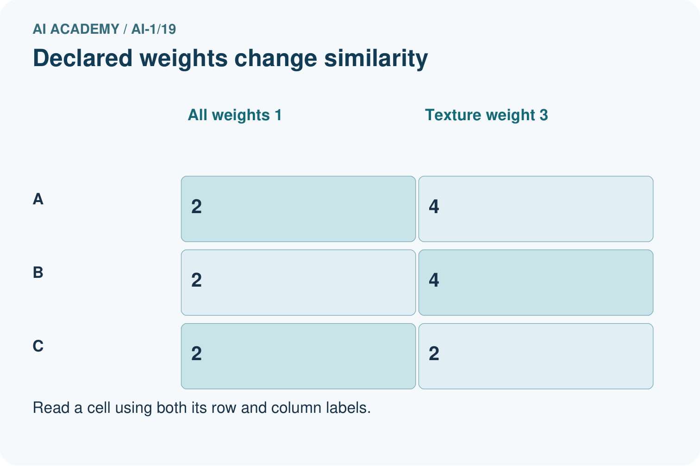
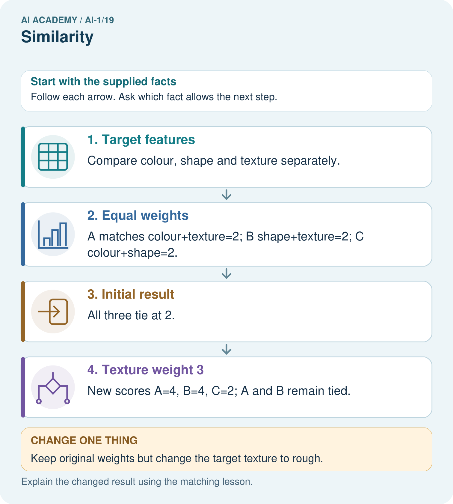
Read the picture one step at a time
Why this result follows
Similarity is defined by the chosen representation and weights. The cards did not change when texture gained weight; the comparison rule did. Two high scores need not mean two identical cards. A complete rule also says what to do with tied scores, rather than choosing whichever appears first by accident.
What this example does not establish
A high feature-match score does not establish usefulness or suitability beyond the features represented.
Read the labelled picture: Point to the matches supporting C’s new score and explain why there is no tie.
Change one thing: Keep original weights but change the target texture to rough. Predict the result before checking the explanation. What remains the same?
Student lesson · 7 of 16
Find and repair a mistake
COMPARE
Same Result, Different Reason
A comparison helps reveal the true concept boundary.
| Case | Evidence | What it shows |
|---|---|---|
| Same topic, different level | close on topic | far on reading level |
| Same length, different mood | close on length | far on mood |
| Weighted topic | topic counts more | neighbor changes |
| Missing feature | distance incomplete | need policy |
Repair two tempting claims
CLAIM A The nearest item is automatically the best recommendation.
Repair:
CLAIM B Two items have one permanent similarity score.
Repair:
A closer explanation
Feature selection leaves information out. A card comparison ignores size and material unless those are included. A book comparison using topic and format may ignore language or reading difficulty. More features are not automatically better: irrelevant or repeatedly copied features can change a score without improving the decision.
A useful report states the purpose, candidates, selected features, weights, missing-value policy and tie policy. Check the proposed method on relevant cases that include ties and imperfect records. If it supports a recommendation, keep the explanation limited to what was actually compared.
Student lesson · 8 of 16
Practise together
GUIDED PRACTICE
Try It, Check It, Explain It
Use support now so you can succeed independently later.

Explain how the picture story demonstrates this idea: Recommendations often begin by comparing selected traits, not whole objects.
Use a fresh example to explain similarity.
Trace a new input → process → output example.
Find and repair the error in: Two items have one permanent similarity score.
Invent one edge case and name the safe response.
A closer explanation
Add candidate D: blue, round, smooth. Under the original one-point rule, D scores 2, tying A. Our policy is to return every candidate with the largest score, so the result is A and D. Returning only the first row would silently introduce a different policy.
If a required comparison value is missing, our classroom policy pauses the final ranking and requests the missing value. Retain the known contributions and the reason for the pause. A different policy could be designed, but it would need to be explicit and checked for its effects. Unknown and different are separate states.
Practise with less help: Explain a changed winner
Use workbook W2 for the connected example “Similarity and selected features”. First fill the input and rule boxes. Try the middle steps before asking for a hint. After a hint, try the next step yourself.
| Plan | Do | Check |
|---|---|---|
| What is given? Which rule or procedure applies? | Record each intermediate step. | Does the result follow? What remains unknown? |
Explain your trace to a partner. Your partner points to one step to check. Swap roles on the next case. Each person writes their own explanation.
Check your reasoning
Use the worked case for Similarity and selected features. Proposed explanation: “Similar has one objective meaning for every task”. Decide whether this explanation is supported. Point to the step or supplied fact that decides; explain your repair if needed.
Answer on your own before discussion. If you are unsure, say which step you need help with.
Explain the picture
Point to the matches supporting C’s new score and explain why there is no tie.
This is supported practice. Keep the separately named independent case for an attempt before feedback.
Student lesson · 9 of 16
Run the investigation
EXPLORER LAB
Trait Map Neighbors
Predict first, test honestly, and explain what the evidence means.

State your prediction before the result is known.
Complete the task: Create a trait map and find two different 'nearest' items.
Keep a normal case and an edge case clearly separated.
Record what happened—even when it does not match your prediction.
Explain the result, one limitation, and the next useful test.
| Case | Prediction | Observed result | What it means |
|---|---|---|---|
| Normal | |||
| Edge |
Plan → try → check
Before trying: what do I expect, and why? While trying: which step could first go wrong? Afterwards: what did I actually observe, and what should change? Keep “not run” if you only traced the procedure.
Student lesson · 10 of 16
Build your understanding
PRACTICE LADDER
Climb from Recall to Defense
Each step asks for a stronger kind of understanding.

RECALL Define similarity.
EXPLAIN Recommendations often begin by comparing selected traits, not whole objects.
TRACE Show the input, process, and output.
DIAGNOSE Repair: The nearest item is automatically the best recommendation.
TRANSFER Apply the idea to a new home or classroom case.
CREATE Design one revealing test.
DEFEND Give a claim, evidence, mechanism, limit, and safe action.
Student lesson · 11 of 16
Connect your project
PROJECT
Helpful Classroom Sorter
Build one coherent system across the year, one evidence-based decision at a time.

What real classroom need does this serve?
What information is necessary—and what should stay private?
What happens inside the process?
What normal and edge cases will you test?
When should it say not sure or ask a person?

My project decision:
Evidence for your project
Declare sorter similarity features, weights and tie behavior before using scores to explain recommendations.
Student lesson · 12 of 16
Show what you know
MASTERY
Fresh-Case Independent Proof
Complete this after teaching and guided practice have ended.

□ Name or draw the fresh case.
□ Trace input, process, and output.
□ State the conclusion and strongest evidence.
□ Name one limit, failure, missing clue, or fairness/privacy concern.
□ Explain one safe next action or improvement.
Independent evidence:
My level: □ Not yet □ With one hint □ Independently □ I can teach it
Student lesson · 13 of 16
Study a complete case
Week 19 Worked case
Use the supplied details to practise the weekly concept before attempting the independent question. This case extends the illustrated lesson.
The situation
Book A has animals and adventure; B has animals only; C has neither. A reader wants both traits.
The question
Rank by number of matching traits.
Worked explanation
A scores 2, B 1, C 0. Ranking depends on the chosen traits; it is not a universal measure of book quality.
Explain it in your own words
Which detail supports the answer, and why does it matter?
Trace the supplied case visually
Count matching book traits
| Evidence or stage | Value or result |
|---|---|
| Book A | 2 |
| Book B | 1 |
| Book C | 0 |
Book A has animals and adventure; B has animals only; C has neither. A reader wants both traits.
Rank by number of matching traits.
A scores 2, B 1, C 0. Ranking depends on the chosen traits; it is not a universal measure of book quality.
Student lesson · 14 of 16
Try a new case independently
Independent case: Transfer the comparison to books
A target book has topic space, format comic and language English. Candidates are J: space, prose, English; K: animals, comic, English; L: space, comic, Spanish. Give 1 point per exact match and return all tied highest scorers. Then make topic worth 3 points while keeping the other weights at 1. Report both sets of totals and winners. Explain why a winner may still fail a requirement to read English.
Attempt this case before feedback. Record any help. Earlier examples below are further practice; a case already practised with feedback cannot establish fresh transfer.
Week 19 Independent application
Close the worked explanation. Apply the idea to this different question without copying.
Compare books using topic only. Book A is about space with a red cover; B is about space with a blue cover; C is about dogs with a red cover. Which matches A best?
My answer, with a trace, calculation or supporting evidence
Create and test
Change one relevant detail. Predict the result before testing. Include a boundary or missing-information case when it helps reveal a limit.
My changed input and expected result
Connect to your project
Choose two useful item traits for similarity-based sorting and explain why each deserves its weight.
The evidence I will keep
Your teacher has the independent answer and scoring criteria. Complete the matching workbook week to keep your practice evidence together.
Transfer practice from the original programme
A reader wants mystery and short books. A has both traits, B only mystery, C only short. Score one point per matching trait. The reader now says short is essential. Explain how the decision should change.
Use feedback to improve
Attempt the independent case before hints. Record whether you worked alone, used a hint or followed a model. After feedback, fix the first unsupported step and explain why it changed. A later check uses a changed case, not a copied answer.
Student lesson · 15 of 16
Your lesson route
Start with this question: A fictional craft-card matcher compares each candidate with a target.
| By the end, I can | How I will show it |
|---|---|
| Calculate similarity using explicitly selected features and a stated scoring rule | Explain the deciding step, show a trace or test, and state one limit. |
| Explain how a change in feature weights can change the highest scoring item | Explain the deciding step, show a trace or test, and state one limit. |
| Handle ties and missing features without claiming that a similarity score proves suitability | Explain the deciding step, show a trace or test, and state one limit. |
Remember → watch and explain → try with help → investigate → try independently → keep project evidence. Your teacher may spread this lesson across several classes.
Keep your first prediction. Compare it with what the evidence shows and explain any change.
Student lesson · 16 of 16
Finish and return
Close your notes. Explain this goal in your own words: Calculate similarity using explicitly selected features and a stated scoring rule
If you are unsure, return to the worked picture and explain one arrow. If you are ready, change an input or assumption and justify your prediction.
Save your workbook evidence. At the next review, try a different case before opening your old answer.